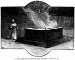

Eggwanga lya Isiraeri
Mu kitabo kyonna eky’Ekyamateeka, Katonda yawa abantu be ebiragiro ebikwata ku ngeri gye baalina okubeera nga batuuse mu Kanani, ensi Katonda gye yali asuubizza Ibulayimu. Ebiragiro bino byatuuka n’okuzingiramu ekika kya gavumenti gye balina okukola. Mu kusooka bajja kufugibwa abalamuzi abad- diriŋŋana (n’olwekyo, ekitabo ky’Abalamuzi). Awo mu Ekyamateeka 17: 14 - 15, Katonda yagamba Abay- isirayiri nti Bakabaka balina okufuga abantu, naye bakabaka abo bokka abaalondebwa (abaafukibwako amafuta) Katonda mu ngeri ey’enjawulo.
Wadde nga Sawulo, Kabaka wa Isiraeri eyasooka yalondebwa Katonda, ku nkomerero yali mujeemu era nga talina nnyo kukkiriza. Katonda teyagenda mu maaso na bufuzi bwa Isiraeri ng’ayita mu lunyiriri lwa Sawulo (mutabani wa Sawulo, Yonasaani, teyamusikira ku bwa kabaka).
Nga bwe twalaba mu nnyanjula ya baibuli mu kitundu ekisooka mu kitabo kino, ebitabo eby’enjawulo bikuŋŋaanyiziddwa okusinziira ku kika ky’ebiwandiiko ( genre) zikiikirira. Ebitabo 8 ebyasooka okuva mu Olubereberye okutuuka ku Luusi, byayogera ku byali- wo mu byafaayo eby’edda mu nsengeka y’ebiseera ( ensengeka mwe byabaddewo). Emboozi y’eggwanga lya Isirayiri eyogerwa mu bitabo ebiwerako eby’endagaano enkadde,naye ot mu nsengeka y’ebiseera.Okusobola okukola amakulu amalungi ku byatuuka ku ani ne ddi, kiyamba okunoonya ekitabo eky’okujuliza ekituwa ensengeka y’ebiseera ebibad- dewo bwe byagenda mu maaso era emboozi ezo gye ziyinza okusangibwa mu ndagaano enkadde. Wano waliwo emmeeza enfunvu ennyo eya bakabaka abaafuga Isirayiri era nga waliwo emboozi eziyinza okusangibwa i endagaano enkadde:
| Olunaku Olulabirirwamu | Kabaka | Ebitabo By’Endagaano Enkadde |
|---|---|---|
| 1050 B.C. | Sawulo | I Samwiri, I Ebyomumirembe |
| 1010 B.C. | Dawudi | II Samwiri, I Ebyomumirembe (Zabbuli ezisinga obungi zi-wandiikiddwa) |
| 970 B.C. | Sulemaani | I Kabaka, II Ebyafaayo (Oluyimba lwa Sulemaani, Omubuulizi, Engero) |
| 925 B.C. - 722 B.C. | Yasirayiri eyawukana mu bwakabaka bubiri | II Kabaka owookubiri, II Basekabaka, II Ebyomumirembe (Engero) |
Dawudi
Omusajja agenda okufuuka Kabaka wa Isiraeri addako, era oboolyawo asinga obukulu, yava mu nsibuko etali ya bulijjo. Dawudi ye yali omwana omuto ( si ye yasinga obukulu, nga bwe kyali bulijjo) ow’omusajja eyali abeera mu kibuga ekirabika obulungi ekyesudde ekiyitibwa Besirekemu. (Kiwulikika nga kimanyiddwa?) kyali kiyita mu lunyiriri lwa Dawudi ( bazzukulu be) nti Yesu yandizaalibwa!
Nga bwe kiri ku basajja bonna abaasooka Katonda be yali alonze okumuyamba okutuukiriza by’ayagala mu nsi, Dawudi teyatuukiridde. Yakola ebibi eby’amaanyi ennyo mu kiseera kye nga kabaka. Naye mu 1 Samwiri 13:14 Katonda agamba Nabbi Samwiri nti Dawudi musajja ng’omutima gwa Katonda yennyini.
Eggwanga ery’Obujeemu

Mutabani wa Dawudi, Sulemaani, ye yamusikira n’afuuka Kabaka. Sulemaani amanyiddwa ng’omuyivu ennyo era ow’amagezi. Era ye kabaka eyakulembera Isirayiri okumaliriza okuzimba yeekaalu ey’Ekitalo eyasooka okufumbirwa kitaawe Dawudi. Sulemaani ayitibwa olw’okuwandiika ebitabo ebitakka wansi wa bibiri eby’Endagaano Enkadde: oluyimba lwa Sulemaani (ekitontome ky’omukwano!) n’omubuulizi. Bw’oba ojja kujjukira, Katonda asookera ddala.
Ebyembi, Isiraeri yali yeetooloddwa ebika n’Amawanga agasinza bakatonda n’ebifaananyi eby’enjawulo. Sulemaani yaleeta bangi ku bantu bano abagwira mu Isiraeri okuyambako mu kuzimba yeekaalu; wamu n’abakozi ne bajja ebifaananyi byabwe.Nga ffenna bwe tumanyi mu bulamu bwaffe, kizibu okubeera buli kiseera ku bantu abatafaananako naffe era abakkiriza mu ngeri ey’enjawulo okusinga ffe, ne tutatandika kwettanira ezimu ku nzikiriza n’enkola naddala okukkiriza kwo bwe kuba kunafu. Kino kye kyatuuka ku ggwanga lya Isiraeri.
Sulemaani ali ludda wa yali Kabaka omukulu mu ngeri nnyingi obufuzi bwe bwatera okuba obukambwe. Yasolooza emisolo eminene ku bantu okuzimba Yeekaalu, awamu n’Olubiri olw’ebbeeyi ku lulwe. Kino n’ebirala byaviirako eggwanga lya israel oku...
Katonda asindika okulabula ng’ayita mu bannabbi

Eggwanga lya isiraeri lyali lirondeddwa Katonda oku- beera abantu be naye emirundi n’emirundi Abayudaaya baali baddayo okusinza ebifaananyi by’a- bantu abaali babeetoolodde. emirundi mingi, okusinza ebifaananyi kuno kwalimu ebikolwa nga ssaddaaka y’abaana abawere n’obugwenyufu Katonda just good by’atagumiikiriza okuva mu bantu be.
Enfunda n’enfunda katonda yasindika bannabbi oku- balabula nti wajja kubaawo ebizibu eby’amaanyi ol- w’obujeemu bwabwe. ekitundu ekisembayo mu nda- gaano enkadde kiwandiika ebigambo bya Katonda bye yaluŋŋamya bannabbi be okwogera. buli kulagula Katonda kwe yakola ng’ayita mu bannabbi be olw’oku-wangulwa n’okuwang’anguse kwa isiraeri okutuukirira.
Okulaba ensengeka y'ebiwandiiko ku bannabbi, tusobola okubateeka mu mboozi efaananako n'eyo gye twakolera Bakabaka ba Yisirayiri. ebintu ebyali Bassekabaka ebyateekebwawo mu biseera bya kabaka asooka n’owokubiri Samwiri asooka n’owookubiri n’eby’omu mirembe ebisooka n’ebyokubiri bye byen- nyini bannabbi bye baagezaako okulabula abantu ba isiraeri.
| Olunaku Olubalirirwamu | Bannabbi | Ebitabo By’Endagaano Enkadde |
|---|---|---|
| 840 BC | Obadia | I ne II Bassekabaka |
| 835 BC | Yoweri | II Bassekabaka, II Ebyomumirembe |
| 760 BC | Yona | II Bassekabaka, II Ebyomumirembe |
| 740 BC | Amosi | II Bassekabaka, II Ebyomumirembe |
| 730 BC | Koseya | II Bassekabaka, II Ebyomumirembe |
| 722 BC | Yisirayiri okusooka okutuuka e Busuuli abayudaaya okuva obutali mu Buwanganguse | II Bassekabaka, II Ebyomumirembe |
| 705 BC | Mikka, Isaaya | II Bassekabaka, II Ebyomumirembe |
| 640 BC | Nahumu, Zephaniya | II Bassekabaka, II Ebyomumirembe |
| 620 BC | Kaabakuku | II Bassekabaka, II Ebyomumirembe |
| 620 BC | Yeremiya | II Bassekabaka, II Ebyomumirembe |
| 605 BC | Yeremiya | Okukungubaga (Ewandikiddwa mu Buwanganguse) |
| 600 BC | Obadia | II Bassekabaka, II Ebyomumirembe |
| 590 BC | Ezekyeri, Danyeri | Okukungubaga |
| 538 BC | Haggai, Zekaliya | Ezra |
| 450 BC | Malaki | Ezeera, Nekkemiya |
Eggwanga eryawanguddwa

ebitabo ebisatu ebisembayo mu ndagaano enkadde, haggai, Zekkaliya ne malaki, byawandiikibwa oku- kubiriza abantu b’Abayudaaya oluvannyuma lw’Obuwang’anguse okuzuukiza okukkiriza kwabwe okwali- wo mu Katonda n’okuddamu okufuuka abeesigwa mu kumusinza kwabwe (Eddiini y’Ekiyudaaya).
ebitabo ebisatu ebisembayo mu ndagaano enkadde, haggai, Zekkaliya ne malaki, byawandiikibwa okukubiriza abantu b’Abayudaaya oluvannyuma lw’Obuwang’anguse okuzuukiza okukkiriza kwabwe okwaliwo mu Katonda n’okuddamu okufuuka abeesigwa mu kumusinza kwabwe (Eddiini y’Ekiyudaaya).

Ebiseera nga Yesu tannabaawo n’oluvannyuma lwa Yesu
byonna eby’ebyafaayo byawuddwamu ebitundu bibiri nga Yesu tannazaalibwa n’oluvannyuma lw’oku- zaalibwa. Omwaka oguli ku kalenda yaffe gwe muwendo gw’emyaka bukya Yesu azaalibwa.
tumanyi Mark kino eky'Endagaano Enkadde n'emabegako n'akabonero BC . ekiyimiriddewo nga Kristo tannabaawo.'' Ennaku nga yesu amaze okuzaalibwa zitegeezeddwa ne AD ekimpi ekisoko kya latine anno domin ekitegeeza bo aba mukama waffe .
waliwo abantu abamu abo abatakkiriza nti Yesu ye yali masiya Omwana wa Katonda eyandyagadde okumuggya mu nkola yaffe ey’omukwano batandise okukozesa ekigambo BCE ekiyimiriddewo nga omulembe oguliwo tegunnabaawo naye nga yaffe eriwo kati etegeezebwa ensonga ya Yesu ekiseera ku nsi kale byonna bitegeeza the ekintu kye kimu kale nga bwe tugamba nga byonna eby’ebyafaayo tebinnaba kwawulwamu ebitundu bibiri nga Yesu tannazaalibwa n’oluvannyuma lw’okuzaalibwa.
Eddiini y’Ekiyudaaya (okusinza Katonda) oluvannyuma lw’okuwang’angusibwa
Omutwe gw’okusinza kw’Abayudaaya bulijjo gwali gwa kuwaayo ssaddaaka y’ebisolo eri Katonda olw’oku- sonyiyibwa ebibi byabwe. ojjukira nti Katonda yagamba Adamu ne kaawa nti baali bagenda kufiirira ebibi byabwe? kubanga Omuyudaaya okusaddaaka ensolo eri Katonda gye yali abalagidde okukola, kyali kabonero okuwanyisiganya ssaddaaka y’obulamu bwaffe olw’ebibi byabwe.
Abayudaaya bwe baddayo mu Isiraeri oluvannyuma lw’Obuwaŋŋanguse bwabwe twagamba nti bannabbi bakubiriza abantu okutandika okunaaba Katonda n’okugondera ebiragiro bye byonna nate.
kirabika abantu b’Abayudaaya (waakiri abo abatono abaali abakomyewo mu Isiraeri) ku nkomerero baali bayize essomo lyabwe: Katonda tajja kugabanya kusinza Ebifaananyi n’obujeemu. Kabona Omuyudaaya eyasituka okufuga Abayudaaya nga ekiva mu butonde eky’obukulembeze bwabwe obw’omwoyo, ayamba okutondawo ekibiina ekimaliridde okubeera abeesigwa: tebajja kukkiriza themseves kuk- watibwako buwangwa obw’ebweru era boo the very best to obey the very letter of amateeka ga Katonda gonna. Kino kye kibiina Yesu Masiya mwe yazaalibwa.
wansi w’endagaano enkadde Katonda yali asuubizza obulamu n’okukulaakulana eri abo abagondera ebiragiro bye eggwanga lya Isirayiri lyali lifunye amaanyi era nga lituuka bwe baali beesiga Katonda kye bakozesa okudda mu kutegeera kwe kwe kuba nti n’okugwa kw’eddembe lino endagaano enkadde yali tekyali mu nkola
Abasajja n’abakazi abakulu ab’endagaano enkadde
twogedde ku bbanga ddene mu mpapula ntono zokka naye Bayibuli ejjudde emboozi z’abasajja n’abakazi abakulu ba Katonda olina okubamanya wano we wasinga okutandikirako nga bw’otandika okusoma Bayi- buli ggwe tajja kubuusabuusa okusanga abalala bangi abayinza okukola olukalala luno lwaki totandikira ku kino olwo ng’obudde bugenda buyitawo era ojja kusoma taata osobola emabegako olukalala lw’ekibi- ina kya Baibuli lwokka kakasa nti ossaako Mark Down essuula ne versus bw’ozisanga bwe kityo ojja kusobola okuzizuula essaawa yonna gy’oyagala
Tutandike!
Nga tonnagenda taata yenna mu kitabo kino, kati kiyinza okuba ekiseera ekirungi okutunuulira ebimu ku bitundu waggulu oba ekimu ku ebyo ebijuliziddwa bye biweereddwa okutuusa kati . Kijja kuba nkola nnene nnyo okuyiga okutunula waggulu " essuula n'Olunyiriri" ebijuliziddwa.